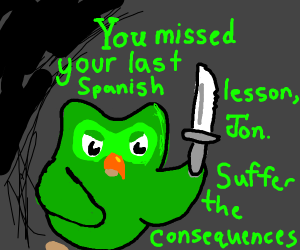
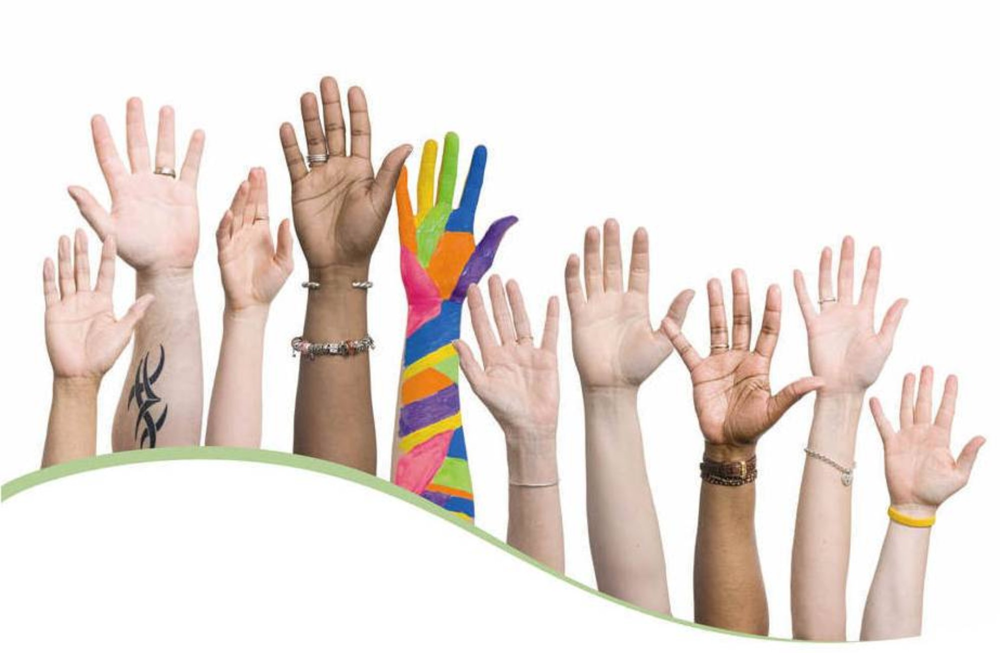

This websites purpose is to help people explore different cultures and broaden their understanding of our planet and the people on it!
Here you can discover many cool things, such as the foodstuff and monuments found in cultures present across the world.
This site will also give you images and other resources to help enhance and further your knowledge!
In addition to showing you these items, we will try to explain their importance to their specific cultures and people.
These cultures have all developed over hundreds of years, and our hope is that helping you learn more about them will broaden your horizons.
Food
People from different communities often share a similar taste in food, and it’s a way people from different communities get to experience a bit of another communities culture, for example we can find restaurants serving food from different communities right in our own city, which helps us get exposed to that communities culture. Lets look at a few examples of foods from different countries!:
In India you often find spicy food, such as 'Biryani' - a classic rice dish which typically has spices, vegetables, and a meat mixed in, and 'Laal Maas', an extremely spicy yet popular dish which means 'red meat' when directly translated.
But even with all those spicy foods in Indias culture, there are many non-spicy foods such as 'Idlis' and 'Dosas', along with a wide variety of sweet dishes such as 'khulfi' and 'gulab jamun'!
The Japanese have a wide range of interesting foodstuff, that has gone mainstream in recent years due to the popularization of a Japanese cartoon art style called 'Anime', which has lead many people to discover traditional Japanese dishes like 'Soba', and 'Yakitori'.
There are many other different cultures with their own food palets, and I encourage you to go search for some! Some of the most interesting in my opinion are the Ukrainian, Egyptian, Middle-Eastern, and French cuisines!
Language
Language is one of, if not THE most important part of any given culture, as it’s the way people communicate with each other to form bonds and is a verbal form of communication. Language is also an important means of expressing cultural values and customs. Lets look at some of the most spoken languages in the world:
The #1 most spoken language in the world is Mandarin, also known to many as Chinese. Its origin is, ofcourse, China, and it is mainly spoken there and in its other territories.
It is an extremely old language and is intertwined with the countries history and traditions, and it would be essential to know if you plan to move there!
The #2 most spoken language in the world is Spanish, mainly spoken in Spain, Mexico, and other latin america countries.
It has also gained popularity around the world as an easy and useful second language to learn, especially with the rise of apps such as Duolingo that help make it easier to learn from, and therefore become the most learned language in the US along with a host of other countries, further increasing its popularity.
It too is intertwined with its countries history, traditions, festivals, etc, therefore making it quite prominent.

The #3 most spoken language in the world is English, which shouldn't be a surprise to anyone.
It is one of the most widespread languages in the world, with most official global events and organisations happening/functioning in English.
Due to how commonly it's used all over the world it is both deeply intertwined with cultures around the world while stil not having any particular culture it actually associates with, which makes it quite unique.
